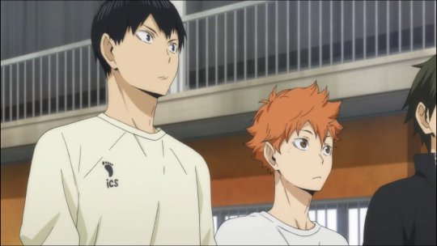
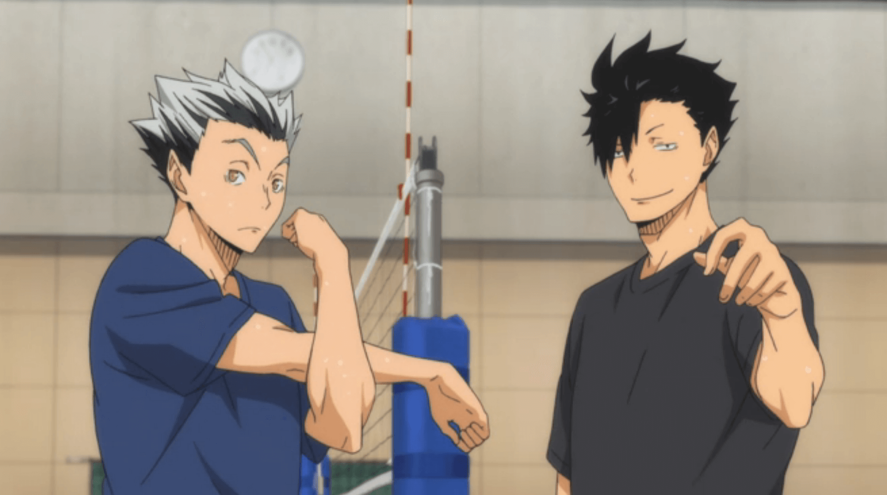
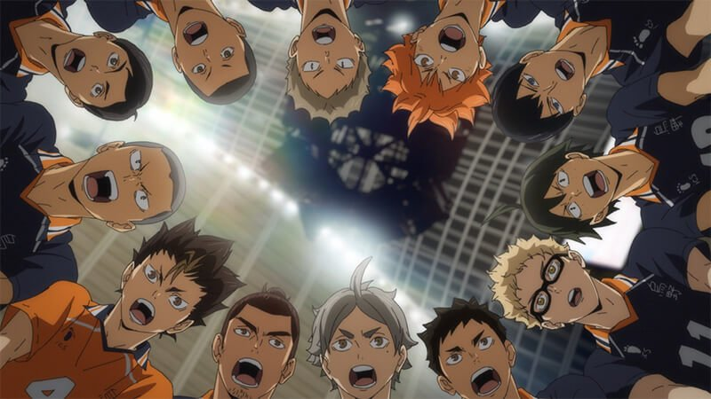

Apa itu Haikyuu?
Haikyu!!, yang diterbitkan di Indonesia dengan judul Haikyu!! Fly High! Volleyball!, adalah sebuah seri manga shōnen asal Jepang yang ditulis dan diilustrasikan oleh Haruichi Furudate. Bab-bab tunggalnya telah dimuat dalam majalah Weekly Shōnen Jump sejak bulan Februari 2012 hingga Juli 2020.
Gua cmau cerita ketika pertama kali gua nonton anime ini langsung saja...
Oiya buat yang belum nonton,nonton aja dulu soalnya disini sangat mengundang spoiler!!
Season 1
Di season pertama ini kita detemui seorang anak kecil yang bernama hinata sedang menaiki sepeda,lalu dia melihat toko yang tv nya sedang menampilkan pertandingan voli dia langsung tertarik saat itu juga dan dia berlatih keras terus menerus agar bisa menjadi idola yang ada di tv tersebut.
Dan dia bertemu dengan musuh dulunya ya itu kageyama,dan ternyata saat mereka sudah masuk sma mereka satu sekolah,sekolah nya diberi nama karasuno,asli seru banget coba kalian nonton deh
Banyak hal yang mereka pelajari dan banyak makna di dalam nya,suatu hari mereka ikut turnamen antar sekolah,asli disini seru banget waktu pertama nonton.
Mereka menang terus menang dan terakhir semi final,mereka menemui sang oikawa,yaitu setter terbaik di perfektur mereka itu,dan mereka saling bertarung,dan siapakah pemenang nya?
Ya.. pemenang nya adalah team nya oikawa,dan hinata ini sangat sedih,semua anggota tim nya putus asa akan kekalahan tersebut,dan lanjut season 2.
Season 2
Hari baru pun tiba,seorang hinata pun mencari cara agar dia menjadi sangat kuat dan kembali untuk mengikuti turnamen tersebut,dan tim karasuno ini mendapatkan undangan untuk mengikuti latihan bersama di tokyo dengan tim-tim yang ada di perfektur tokyo.
Dan banyak kejadian lucu sebelum mereka semua pergi ke tokyo,makanya nonton aja,hhashashash
Saat mereka di tokyo mereka banyak sekali mendapatkan teman baru dan ilmu baru dan mereka menunjukkan kekuatan barunya nanti,setelah mereka selesai,mereka langsung mengikuti turnamen kembali.
Saat mereka mengikuti turnamen hari demi hari,mereka bertemu kembali dengan sang jagonya setter,yaitu oikawa di semi final,dan hinata dengan teman-teman nya terulang kembali saat mereka dikalahkan oleh tim nya oikawa ini,karasuno pun tidak ingin kalah lagi,dan mereka mengepakkan sayap nya untuk terbang lebih jauh.
Kalian tau siapa yang menang? ya tentu saja karasuno hinata pun terkejut akan hal itu,dan saat mereka selesai,tim karasuno itu bertemu dengan tim paling jago disana,siapakah itu?
Season 3
Hinata dan tim nya ini pun mempelajari banyak hal tentang musuh terkuat nya ini,soal bagaimana blocking out smash yang keras dari tim shiratorizawa ini.
Hari nya pun tiba,pertama-tama mereka kalah,soalnya musuh nya ini kuat banget,dan mereka mencari cara agar bisa menang dengan telak,set demi set dan diakhir set mereka sangat seimbang gimana bisa seimbang? MAKANYA NONTON SERU TAU.
Dan di penghujung poin hinata menlotarkan smash yang lumayan cepat dan keras,smashan nya pun mengenai libero,dan bola nya pun mental kebelakang,dan hinata pun mendapatkan poin terakhir,BOOM GILA SERU ABIS DEG DEG GUA PERTAMA KALI NONTON.
Dan mereka akhirnya menjuarai turnamen untuk kesekian lamanya,dan hadiah nya adalah mengikuti turnamen antar perfektur di tokyo.
Season 4
Di season 4 ini banyak yang berubah,soalnya mungkin studio nya berbeda atau gimana,beda banget dari segi grafik nya soalnya :(
Karasuno ini akhir nya bisa ke tokyo juga gais huh,dan disana mereka bertermu dengan tim tim yang sangat kuat,di pertandingan pertama mereka bisa menang,dan di pertandigan kedua mereka bertemu dengan tim yang tak terkalahkan yaitu inarizaki dari perfektur hyoogo.
Hinata ini sangat tertantang sekali,dan banyak yang mendukung tim inarizaki ini,soalnya karasuno ini sangat sedikit penggemar nya.
Dan pertandingan pun dimulai.
Cape ah ngetik nya udah sampe sini dulu ceritanya,kalo mau tau nonton aja :(
Hal-hal yang gua suka dan tidak suka dari anime ini
Menurut gua hinata ini emang orang nya takut akan kekalahan,kenapa gua bilang di awal mental mc sekuat baja?,karena hinata ini saat terkena blocking dia malah tersenyum,dan dia meresa musuh nya ini fokus kepada dia,dan hinata ingin musuh nya ini lebih fokus terhadap dia dan menembus blocking yang tinggi dan kuat itu.
Gk suka nya itu cuman di bagian season 4 nya,kayak ini tuh anime bajakan nya gtu,beda banget deh :(
Mungkin segitu saja cerita dari gua tentang anime ini sampai jumpa di cerita lain see uu....
Do you need a reason not to lose?” -Hinata Shoyo.